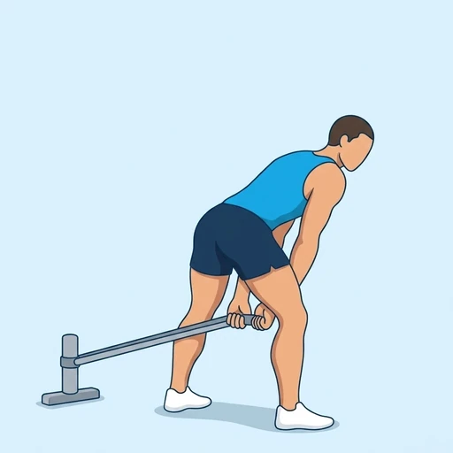

Band Pull-Through
A hip-hinge exercise in which you stand facing away from a low anchor with a resistance band running between your legs and drive your hips forward to stand tall. The pull of the band behind you loads the glutes and hamstrings, which makes it a light, joint-friendly way to practise the hinge.
Upper legs · Resistance Band · Beginner


Muscles worked by the Band Pull-Through
Primary
Secondary
Also called: glute, glutes, gluteus maximus, buttocks, butt, hamstring.
Equipment
Also called: power band, pull-up band, assistance band, tube band, tubing band, long resistance band.
How to do the Band Pull-Through
- Anchor a resistance band at floor level and stand facing away from it, with the band passing between your legs and its free end held in both hands.
- Step forward until the band is under tension and set your feet about shoulder-width apart with your knees slightly bent.
- Push your hips back and hinge forward at the hips with a flat back, letting your hands travel down between your legs.
- Drive your hips forward and squeeze your glutes to stand tall, bringing your hands up in front of your hips.
- Pause with your body in one line, without leaning back, and then hinge down again under control.
- Complete the planned repetitions.
Form tips
- The movement comes from your hips, not from your lower back; think of closing a car door with your hips.
- Keep your back flat and the band under tension the whole time; step further from the anchor if it goes slack at the top.
- Stand tall at the top without leaning back or over-arching your lower back.
At a glance
| Body part | Upper legs |
|---|---|
| Category | Strength |
| Force type | Pull |
| Mechanic | Compound |
| Difficulty | Beginner |
| Equipment | Resistance Band |
| Goals | Hypertrophy, Strength |
| Tags | Leg day, Glute focus, Knee safe, Shoulder safe, Lower back safe, No axial load |
| MET | 6.0 (metabolic equivalent, for calorie estimates) |
| Unilateral | No |
| Bodyweight | No |
| Dataset id | band-pull-through |
Band Pull-Through in German & Spanish
| German | Pull-Through mit Band |
|---|---|
| Spanish | Tirón entre Piernas con Banda |
Descriptions, instructions and tips ship in all three languages in the JSON.
Related exercises
Exercise data (JSON)
The record below is exactly what exercises.json ships for this exercise — names, descriptions, instructions and tips in English, German and Spanish.
{
"id": "band-pull-through",
"name_en": "Band Pull-Through",
"name_de": "Pull-Through mit Band",
"name_es": "Tirón entre Piernas con Banda",
"description_en": "A hip-hinge exercise in which you stand facing away from a low anchor with a resistance band running between your legs and drive your hips forward to stand tall. The pull of the band behind you loads the glutes and hamstrings, which makes it a light, joint-friendly way to practise the hinge.",
"description_de": "Eine Hüftbeuge-Übung, bei der du mit dem Rücken zu einem tiefen Befestigungspunkt stehst, das Widerstandsband zwischen den Beinen verläuft und du die Hüfte nach vorn treibst, um dich aufzurichten. Der Zug des Bandes hinter dir belastet Gesäß und Beinrückseite und macht sie zu einer leichten, gelenkschonenden Möglichkeit, die Hüftbeuge zu üben.",
"description_es": "Un ejercicio de bisagra de cadera en el que te colocas de espaldas a un anclaje bajo, con una banda elástica pasando entre las piernas, e impulsas las caderas hacia adelante hasta quedar erguido. La tensión de la banda por detrás trabaja los glúteos y los isquiotibiales, lo que lo convierte en una forma ligera y amable con las articulaciones de practicar la bisagra.",
"category": "strength",
"force_type": "pull",
"mechanic": "compound",
"difficulty": "beginner",
"equipment": "resistance_band",
"body_part": "upper_legs",
"primary_muscles": [
"gluteus_maximus",
"hamstrings"
],
"secondary_muscles": [
"erector_spinae"
],
"goals": [
"hypertrophy",
"strength"
],
"tags": [
"leg_day",
"glute_focus",
"knee_safe",
"shoulder_safe",
"lower_back_safe",
"no_axial_load"
],
"variation_group": "deadlift",
"is_unilateral": false,
"is_bodyweight": false,
"instructions_en": [
"Anchor a resistance band at floor level and stand facing away from it, with the band passing between your legs and its free end held in both hands.",
"Step forward until the band is under tension and set your feet about shoulder-width apart with your knees slightly bent.",
"Push your hips back and hinge forward at the hips with a flat back, letting your hands travel down between your legs.",
"Drive your hips forward and squeeze your glutes to stand tall, bringing your hands up in front of your hips.",
"Pause with your body in one line, without leaning back, and then hinge down again under control.",
"Complete the planned repetitions."
],
"instructions_de": [
"Befestige ein Widerstandsband in Bodenhöhe und stell dich mit dem Rücken dazu, das Band läuft zwischen deinen Beinen hindurch und das freie Ende hältst du in beiden Händen.",
"Geh nach vorn, bis das Band unter Spannung steht, und stell die Füße etwa schulterbreit auf, die Knie leicht gebeugt.",
"Schiebe die Hüfte nach hinten und beuge dich mit geradem Rücken in der Hüfte nach vorn, während deine Hände zwischen den Beinen nach unten wandern.",
"Treibe die Hüfte nach vorn und spanne das Gesäß an, um dich aufzurichten, und bringe die Hände vor die Hüfte.",
"Halte oben kurz inne, mit dem Körper in einer Linie und ohne dich zurückzulehnen, und beuge dich dann kontrolliert wieder nach unten.",
"Absolviere die geplante Anzahl an Wiederholungen."
],
"instructions_es": [
"Ancla una banda elástica a ras de suelo y colócate de espaldas a ella, con la banda pasando entre las piernas y el extremo libre sujeto con ambas manos.",
"Da un paso hacia adelante hasta que la banda quede en tensión y coloca los pies separados al ancho de los hombros con las rodillas ligeramente flexionadas.",
"Lleva las caderas hacia atrás e inclínate hacia adelante desde las caderas con la espalda recta, dejando que las manos bajen entre las piernas.",
"Impulsa las caderas hacia adelante y aprieta los glúteos para ponerte erguido, subiendo las manos frente a las caderas.",
"Haz una pausa con el cuerpo en una sola línea, sin inclinarte hacia atrás, y luego vuelve a bajar con control.",
"Completa el número de repeticiones previsto."
],
"tips_en": [
"The movement comes from your hips, not from your lower back; think of closing a car door with your hips.",
"Keep your back flat and the band under tension the whole time; step further from the anchor if it goes slack at the top.",
"Stand tall at the top without leaning back or over-arching your lower back."
],
"tips_de": [
"Die Bewegung kommt aus der Hüfte, nicht aus dem unteren Rücken; stell dir vor, du schließt mit der Hüfte eine Autotür.",
"Halte den Rücken gerade und das Band die ganze Zeit unter Spannung; geh weiter vom Befestigungspunkt weg, wenn es oben erschlafft.",
"Steh oben aufrecht, ohne dich zurückzulehnen oder ins Hohlkreuz zu gehen."
],
"tips_es": [
"El movimiento sale de las caderas, no de la zona lumbar; piensa en cerrar la puerta de un coche con las caderas.",
"Mantén la espalda recta y la banda en tensión todo el tiempo; aléjate más del anclaje si se afloja arriba.",
"Ponte erguido arriba sin inclinarte hacia atrás ni arquear en exceso la zona lumbar."
],
"met": 6.0,
"images": {
"flat": {
"start": "images/flat/band-pull-through-start.webp",
"peak": "images/flat/band-pull-through-peak.webp"
}
}
}Fetch just this exercise
const { exercises } = await fetch(
"https://exercise-dataset.com/exercises.json"
).then(r => r.json());
const ex = exercises.find(e => e.id === "band-pull-through");Free for personal and commercial in-app use with attribution (“Exercise data by RepDB”) — see the license and ready-made attribution snippets. Redistributing the data as a dataset or API is not permitted.